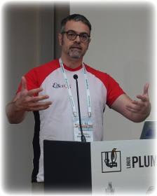

Collaborating with out-of-tree tracers
LTTng creator Mathieu Desnoyers seems a bit trapped in something of a catch-22. At the 2026 Linux Plumbers Conference (LPC), he led a discussion on the problem he is having in trying to collaborate with other tracing projects (e.g. ftrace, perf) in the kernel. The feedback he has gotten, both over the years and more recently, does not show a path that would allow him to contribute the 21-year-old GPLv2-licensed LTTng tracing framework, or, incrementally, features from it, to the mainline kernel.
Ftrace creator (and tracing-track organizer) Steven Rostedt introduced the
session as "the least-controversial topic of today
" to audience
laughter. Desnoyers said that he has been maintaining LTTng since 2005 and
wanted to explore "how we can improve collaboration between people
working on out-of-tree tracer projects and [the] upstream kernel
". He
said that he wanted the session to be a discussion, not a presentation,
thus only had two slides.
He noted that if he paraphrased the perspective of core kernel developers on tracers, it is that tracers belong in the kernel, not loaded into the kernel as a module; he has been told that repeatedly over the years. Both ftrace and perf are in the core kernel and are not able to be built as modules, he said.
He then quoted from a July 2025 email
from Linus Torvalds in reply to Desnoyers's RFC about
upstreaming LTTng:
"If people need two tracing models, then the other one will be out of
tree. It's that simple.
" In that same message, Torvalds also said:
So as far as I'm concerned, this discussion is not a discussion. Either there's a way to merge things incrementally with SHARED infrastructure, or there isn't.

The combination of those constraints puts the LTTng project into a tricky situation, Desnoyers said. It is more efficient for the project to continue working out of tree if it will not be able to use any features that it contributes to the mainline. Under current kernel guidelines, new features cannot be exported to a kernel module unless they will be used by one that is in the mainline. LTTng has a feature set that its users like and will want to see continue; ideally, features from LTTng would be added to the kernel until all of them are upstream.
As Torvalds said, the way to get there is incrementally, Desnoyers
noted. "That means pushing, piece by piece, portions of the LTTng module
into the upstream tracers, up to the point where we are
feature-complete.
" That can be done by first convincing the upstream
tracing maintainers that the features are useful for their use cases, but
if the project is successful at doing so, its reward is having to maintain
both the in-tree and out-of-tree code.
That extra maintenance burden would continue until all of the features that
LTTng users need are upstream, which could take quite some time. The
alternative would be to relax the requirement that all tracers must be
built into the kernel. If the kernel-development community were willing to
recognize that there are out-of-tree tracers with developers who want to collaborate, and
to allow adding features that are exported (via EXPORT_SYMBOL_GPL())
so that those tracers, likely built as kernel modules, can use them: "Then we
can have shared infrastructure, and then we can remove pieces of [the] LTTng
module and upstream them incrementally.
"
Currently, there is a prohibition on exporting symbols that do not have an in-kernel user. Even if the LTTng developers are successful in convincing other tracing maintainers of the value of some of its features, the hooks needed for LTTng to continue using them would not be available. Taking LTTng upstream as an all-or-nothing patch set could also work, but Torvalds was quite clear on his position on that. Catch-22.
Collaborating
"I'm a little ticked by this as well
", Rostedt said. He has been
working with Desnoyers for years on various tracing functionality in the
mainline kernel; they have collaborated on that work quite a bit. There
are features in LTTng that he would like to have in ftrace, but there is a
"strict, I call it 'draconian', attitude
" that symbols should not be
exported unless they have users in the kernel tree. Christoph Hellwig is
"the biggest pusher
" against any exports, even to GPL-covered code,
unless there is an in-kernel user.
Rostedt said that he discussed the problem with Hellwig at LSFMM+BPF in May, but that Hellwig was
adamant about not exporting symbols unless some code in an in-tree kernel
module uses them. Rostedt said that means the kernel project is not looking
to collaborate. "Let's just say 'Linux is not pro-open-source, Linux is
not pro-collaboration'
". If the kernel project is going to be hostile
to a GPL-covered project, with a longtime kernel developer behind it, then
the project should be clear about its intentions. He noted that Desnoyers
was the developer of tracepoints, which are used throughout the
kernel-tracing ecosystem; if the kernel developers cannot find a way to
incorporate projects like LTTng, the kernel project should just say it
outright and clearly.
He does not understand the rationale behind disallowing
exported symbols for modules like LTTng. He had hoped that Hellwig would
come to the discussion and had invited him, but Hellwig was not
present. "He should have come
", Rostedt said.
An attendee said that he agreed, in general, with expanding exports, but
was concerned that it would create new interfaces that would need to be
maintained forever. Rostedt was quick to point out that the kernel-module
interface is not a user-space interface that would need to be maintained if
others started using it. Desnoyers said that as an out-of-tree tracing
project, LTTng has become good at adapting to changes in that interface
over the years. "We just need some basic guarantee that people won't
actively try to sabotage what we are trying to do and when we
contribute some piece of infrastructure, that we can use it.
"
Another attendee wondered what it was that LTTng might contribute to the kernel infrastructure. Desnoyers pointed out that he had been working on SFrame support for the kernel over the last two years; if it gets into the kernel, there will be no symbol exported so LTTng will not be able to use it to unwind the stack, Rostedt said.
At one point, a patch proposing to add LTTng to the kernel was prepared, but did not go anywhere because Torvalds objected to duplicated functionality, Rostedt said. LTTng did not have access to the kernel internals, and could only use exported symbols, so it had to implement much of the infrastructure that ftrace and others can use directly, he said. So, effectively, the lack of exports caused LTTng to duplicate functionality and to often implement it in its own way. Torvalds argued that since unification between LTTng and the in-kernel tracers has not happened in the last 20 years, it never will. Rostedt countered that part of the reason there has been no unification is that LTTng and the kernel could never share code.
Modules
Desnoyers said that he framed things somewhat differently. Symbols needed by LTTng could be exported for use in the kernel self tests and LTTng could then use them. The real constraint, he said, is that kernel tracers cannot be built as kernel modules, because that would prevent exporting symbols for self tests; those tests would effectively be kernel-tracing modules.
Rostedt said that another part of the problem is that LTTng is focused on
completely different use cases than the in-kernel tracing tools. Over the
years, there were the "ring-buffer wars
" between tracers, trying to
find "the one ring buffer to solve them all
", but the tracing
community found out that there are "lots of different use cases
"
with "slightly different requirements
", which leads to multiple
ring-buffer implementations. It is easy to believe that there should just
be one ring-buffer implementation for the kernel, "but once you start
actually getting into the nasty details, that's not the case
".
Brendan Gregg noted that he has not looked into LTTng for no other reason than a lack of time to do so, but that may be changing. Increasingly, he is finding that it is more difficult to obtain SSH access to misbehaving systems, so he is looking at LTTng features that can help diagnose problems without that access. I exchanged email with Desnoyers after the session to ask about those features; he said that his users often set up the tracer to run all of the time, with triggers to capture (and export) snapshots of the tracing data. Restricting SSH is often done for servers that have sensitive data, such as personally identifiable information (PII) for users, which is what Gregg is encountering more frequently these days.
In the LPC session, Desnoyers said that LTTng's focus has been on
correlated kernel and user-space tracing, with the ability to snapshot and
export the
tracing data when errors are detected. It is used by telecommunications
companies, for example, on routers for fiber-optic networks in just that
way. Rostedt said that Torvalds has told him that no one really wants the
tracing features, but Rostedt pushed back. He noted that Torvalds does not
really attend conferences, but that if he did, he would find out that lots of
people want tracing and new tracing features, not just "you and your
small little group
", as Torvalds put it. The user base is quite large,
Rostedt said, "it's basically everyone at Open Source Summit
".
To a certain extent, Torvalds "lives inside his own little cocoon
",
Rostedt said;
he needs to talk to people at LPC or other conferences to better understand
how people are using his kernel. Hellwig does attend some
conferences, Rostedt said, "but he's not in this room, and I asked him
to be here
". He wondered: "How do you get the conversation going
when they don't want to even have the discussion?
" If no way can be
found to solve these problems, then
the kernel should declare itself "external-project hostile
", he
said, which are harsh words but accurately reflect how he feels.
YouTube video of the talk from the livestream is available.
[Thanks to the Linux Foundation, LWN's travel sponsor, for assistance in
attending LPC in Prague.]
| Index entries for this article | |
|---|---|
| Kernel | Development tools/Kernel tracing |
| Kernel | Tracing |
| Conference | Linux Plumbers Conference/2026 |
Posted Oct 14, 2026 15:07 UTC (Wed)
by compudj (subscriber, #43335)
[Link]
Posted Oct 14, 2026 15:33 UTC (Wed)
by josh (subscriber, #17465)
[Link]
Posted Oct 14, 2026 15:54 UTC (Wed)
by epa (subscriber, #39769)
[Link] (3 responses)
That way as the features are incrementally added upstream, the fork-specific code (the LTTng implementation) becomes smaller and smaller until the last piece can be merged. I think this is the way other big projects such as the realtime patches were developed and merged.
Posted Oct 14, 2026 16:20 UTC (Wed)
by nevets (subscriber, #11875)
[Link] (1 responses)
LTTng is the opposite. It is just a way to monitor the way the current kernel works. Ideally it does not modify the kernel you are using. To have a separate kernel for tracing would negate the purpose of tracing in the first place. You want to trace the mainline or primary kernel. If you need to modify it, there's no guarantee that you are tracing the same logic.
Now IIRC, there has been times where distros applied LTTng to their main kernel. But then that also adds a burden on the distros. The push was to have LTTng work with the upstream kernel without modifications which was what drove LTTng to implement things differently from what was going on in mainline so that it could be applied directly to the mainline kernel.
Posted Oct 14, 2026 16:32 UTC (Wed)
by epa (subscriber, #39769)
[Link]
Posted Oct 14, 2026 17:13 UTC (Wed)
by compudj (subscriber, #43335)
[Link]
After an unsuccessful attempt at providing a "libringbuffer" to unite Ftrace and LTTng in 2010 (it was dismissed on the grounds that it should cover perf too), based on the distribution feedback, we worked on creating LTTng modules (2.0) from 2010 to 2012 , which main benefit was to not require any kernel patches. But this made it trickier to contribute our improvements upstream due to the symbol exports policy we still have today.
Note that the LTTng modules project offers a "Kernel built-in support" option (see the project README.md): it simply creates a symbolic link from the Linux kernel sources to the LTTng-modules sources, and adds a Kconfig CONFIG_LTTNG option to the kernel. So it's an option which is available today without a kernel fork, but AFAIK Linux distributions prefer to package LTTng as modules rather than build it into their kernel image.
Posted Oct 14, 2026 18:29 UTC (Wed)
by Paf (subscriber, #91811)
[Link] (1 responses)
Posted Oct 14, 2026 22:07 UTC (Wed)
by koverstreet (subscriber, #4296)
[Link]
Kernel people often talk about how people should "work with upstream" and be "community minded", but go eerily silent when reminded that the community is more than just them.
Posted Oct 14, 2026 19:47 UTC (Wed)
by linuxrocks123 (subscriber, #34648)
[Link] (2 responses)
Posted Oct 14, 2026 20:18 UTC (Wed)
by tux3 (subscriber, #101245)
[Link] (1 responses)
Posted Oct 14, 2026 20:29 UTC (Wed)
by tux3 (subscriber, #101245)
[Link]
Posted Oct 14, 2026 20:14 UTC (Wed)
by fmoessbauer (subscriber, #171204)
[Link]
Hi, author of bt2-ftrace-to-ctf (LGPL-2.1) here. This project implements a babeltrace2 plugin to convert a
Small clarification
Not actually duplication
Why does LTTng have to be built as a module?
Why does LTTng have to be built as a module?
Why does LTTng have to be built as a module?
Why does LTTng have to be built as a module?
Nice to see this raised
Nice to see this raised
Can't You Just Use the Non-Exported Symbols?
Can't You Just Use the Non-Exported Symbols?
(But that goes beyond calling non-exported functions, stap guru mode lets you inspect and modify kernel *data*, which is a new fun way to crash your box.)
Can't You Just Use the Non-Exported Symbols?
Nevermind then, I guess it's doing exactly the kallsyms trick already.
ftrace to LTTng CTF converter
trace.dat file (from trace-cmd) into the LTTng format (CTF). It can align LTTng UST traces with kernel ftraces for a unified view - that can be read by trace-compass. By mimicing the LTTng kernel semantics, also the critical control flow analysis is supported.
At FOSDEM 2026 I gave a talk about the converter, and since then evolved it a lot.